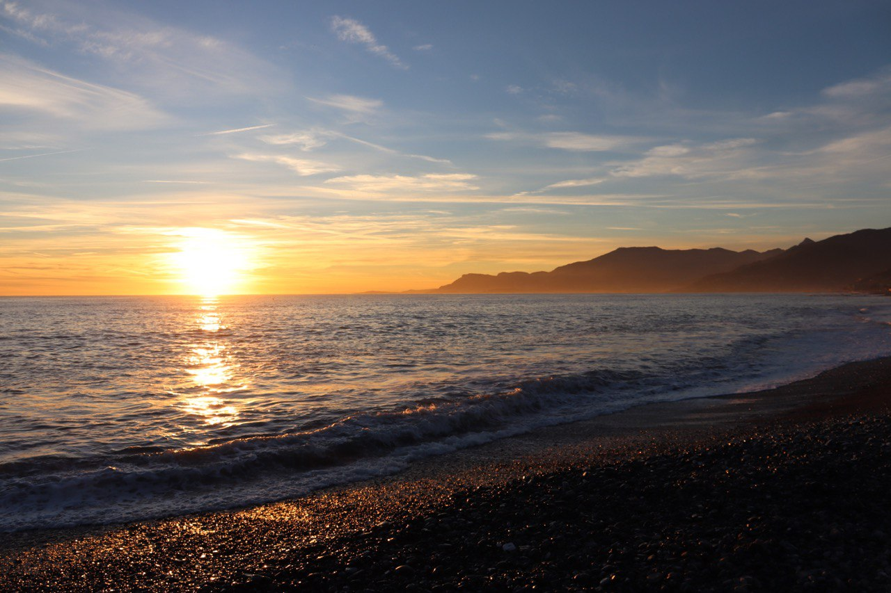
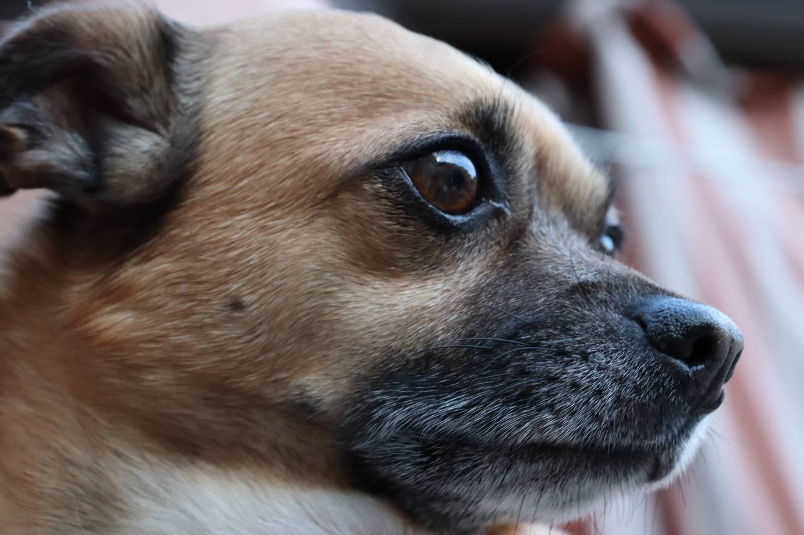
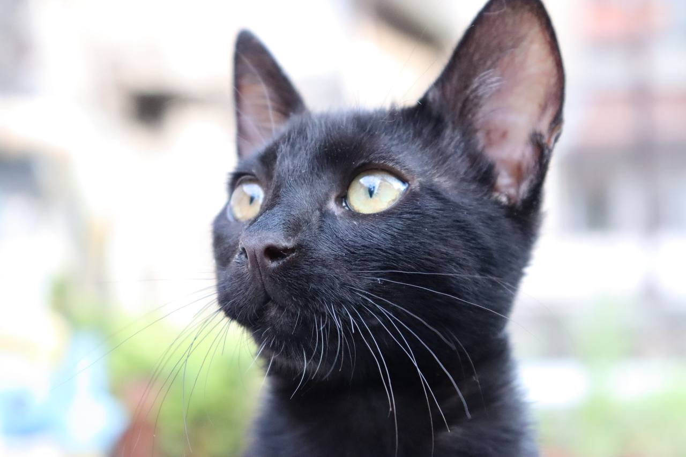
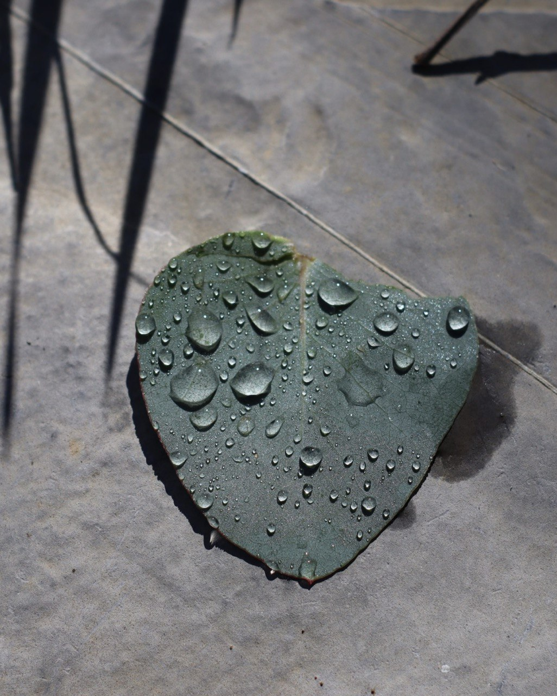
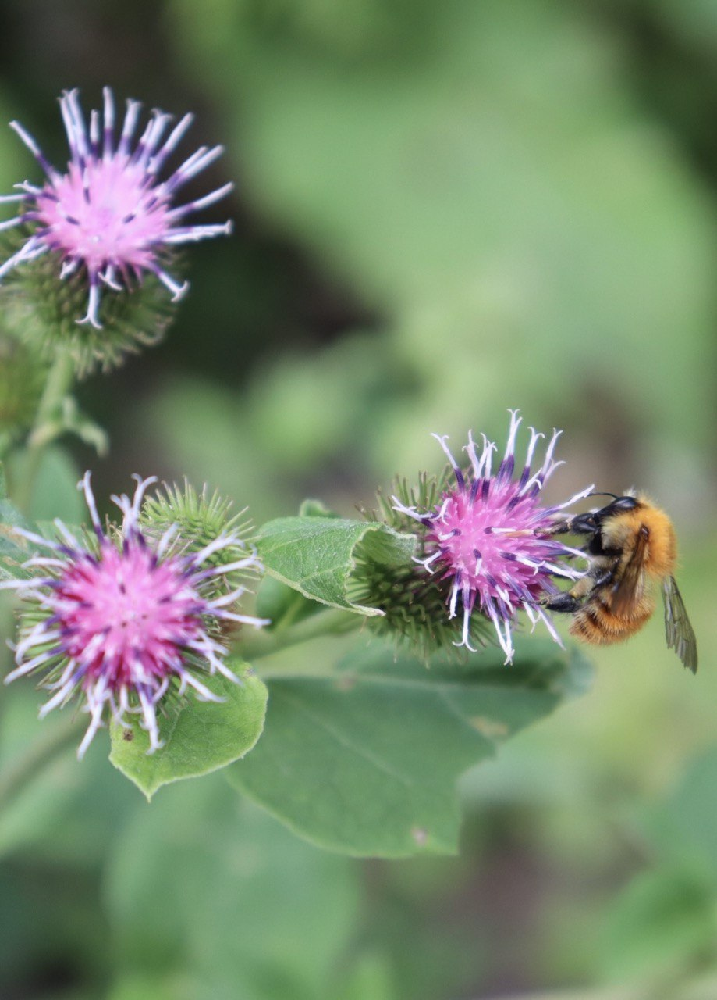
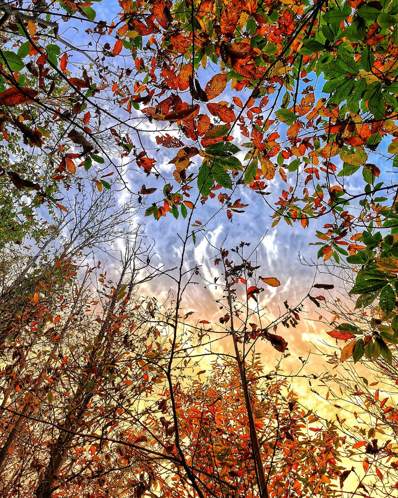

Come ho scritto nella mia biografia, la fotografia e gli animali sono alcune delle mie più grandi passioni.
In questa fotogallery vorrei condividere parte di queste mie passioni con qualche mio scatto di alcuni dei miei cani e gatti e di qualche soggetto random.
Sono ancora un principiante e ci sono tante cose che devo ancora imparare ma spero che questa gallery sia di vostro gradimento!

Scatto di un tramonto in spiaggia.

Milo, uno dei miei cani.

Uno dei miei gatti, Joel.

Scatto random dopo una giornata di pioggia.

Altro scatto random, questa volta ad un insetto su un fiore.
